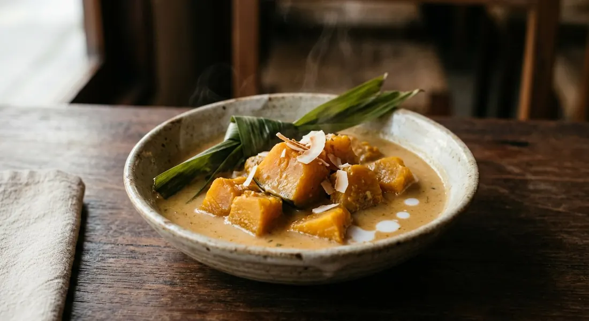

Pumpkin simmered in sweetened coconut milk with pandan — four ingredients, one pot, and the dessert Thailand serves from temple fairs to hospital wards.

ฟักทองแกงบวด — the sources print it both ways, แกงบวดฟักทอง is just as common — is the pumpkin member of the kaeng buat family, Thailand's group of desserts where fruit and roots are simmered in sweetened coconut milk: banana (กล้วยบวชชี), taro, sweet potato, young coconut. The name says exactly what happens: บวด means to simmer gently in sweet coconut milk, and แกง here carries none of the curry-paste weight it has elsewhere in the language. A ripe pumpkin, palm sugar, coconut milk, pandan and salt — that is the whole dish.
The difference between a good bowl and a mushy one is decided before the pot goes on. Three of our six sources soak the cut pumpkin in น้ำปูนใส, lime water, before cooking — 30 minutes (Kapook), 30–60 (Wongnai), a full hour (Aroifin) — so the flesh stays firm and glossy instead of collapsing. Wongnai adds its rule: once the pumpkin is in, do not stir too often, or it breaks up. And ครูดอกหญ้า on TrueID goes further — after the sugar goes in she does not stir at all.
The pumpkin matters as much as the technique. ครูดอกหญ้า's guide: it must be mature (แก่จัด) and a local variety — the sweet type runs orange right through to the skin; the starchy type shows a green ring inside the rind and, she warns, falls apart in the pot. And the dish has a soft-power side: Kapook has a nursing-mother version, because Thais believe pumpkin increases breast milk — alongside loofah and banana blossom — so she swaps the coconut milk for skimmed milk entirely.
| Thai | English | Amount |
|---|---|---|
| ฟักทอง | Pumpkin | 600 g |
| กะทิ | Coconut milk | 450 ml |
| น้ำตาลปี๊บ | Palm sugar | 100 g |
| เกลือ | Salt | ½ tsp |
| ใบเตย | Pandan leaves | 4 leaves |
The classic two-coconut batch (Aroifin, 6 servings): 1 kg pumpkin, 800 g pasteurised coconut milk, 200 g coconut sugar, 2/3 tsp salt, 3 tied pandan leaves, 400 g water, and a 1-hour lime-water soak — one part of the milk is thinned with water to cook the pumpkin, and the reserved thick cream goes in at the end. The no-lime-water bowl (TrueID, ครูดอกหญ้า): 1 kg mature pumpkin, 400 g white sugar, 1 tsp salt, 500 g coconut milk heated until the oil breaks, 500 g water — no pandan, no soak, finished with fresh coconut milk drizzled on top. The nursing-mother bowl (Kapook): 300 g pumpkin in 500 ml skimmed milk with 40 g white sugar, 40 g palm sugar, 2 pandan leaves and a pinch of salt — the folk-medicine version with no coconut at all.
The sugar. Wongnai uses น้ำตาลปี๊บ, palm sugar; Kapook and Aroifin use น้ำตาลมะพร้าว, coconut sugar — the same deep-caramel idea, pressed into different shapes. TrueID's ครูดอกหญ้า uses 400 g of plain white sugar and Yummy3 five tablespoons; Kapook's milk version splits the difference, 40 g white and 40 g palm.
Lime water or not. Wongnai (30–60 minutes), Kapook and Kapook-milk (30 minutes) and Aroifin (1 hour) all soak the pumpkin in น้ำปูนใส to keep the flesh firm. ครูดอกหญ้า skips it entirely and says so — her position is that a truly mature pumpkin does not need it. The soak is insurance, not law.
Coconut milk or cow's milk. Five of six sources cook in coconut milk. Kapook's nursing-mother recipe swaps in 500 ml of skimmed milk, on the Thai folk belief that pumpkin increases breast milk — same name, same technique, a very different bowl.
One milk or two. Aroifin keeps the classic two-stage build: thin milk (หางกะทิ) cooks the pumpkin, then the thick head cream (หัวกะทิ) goes in at the end and is never boiled. Wongnai and Kapook cook everything in a single pot. ครูดอกหญ้า starts by heating the coconut milk until the oil breaks (เคี้ยวจนแตกมัน) before diluting it with water — a street-stall trick that deepens the flavour.
Water. Wongnai adds none at all; Kapook matches the milk with equal water; Aroifin thins with 400 g; TrueID uses 500 g. It is the richness dial — no water gives the richest, most dessert-like bowl.
The topping. Only ครูดอกหญ้า finishes each bowl with a drizzle of fresh coconut milk on top; everyone else serves the pot as it is.
This recipe is translated from the following Thai-language sources. Where they disagree, we've said so.
1. Wongnai — "แจกสูตรฟรี 'แกงบวดฟักทอง' เมนูขนมไทยรสกลมกล่อม ทำง่าย ๆ ไม่กี่ขั้นตอน!" (the recipe used here) — wongnai.com
2. Kapook Cooking — "วิธีทำแกงบวดฟักทอง สูตรขนมไทยง่าย ๆ อร่อยหอมมัน" (the lime-water soak and the water ratio) — cooking.kapook.com
3. Kapook Cooking — "แกงบวดฟักทองนมสด ขนมไทยเรียกน้ำนมสำหรับคุณแม่" (the nursing-mother milk version) — cooking.kapook.com
4. TrueID Food — "แจกสูตรแกงบวดฟักทองหอมมัน by ครูดอกหญ้า" (pumpkin selection, the no-lime-water method, the kathi-breaking trick) — food.trueid.net
5. TrueID Food — "แจกสูตรบวดฟักทอง ขนมไทยทำง่าย หอมมัน อร่อยมาก มีคลิป Yummy3" (the three-step version) — food.trueid.net
6. Aroifin — "วิธีทำ ฟักทองแกงบวด หอมมันกะทิ หวานกำลังดี ทำง่าย" (the classic two-coconut build) — aroifin.com